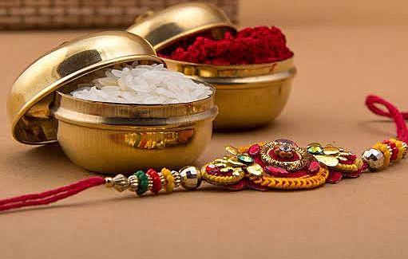
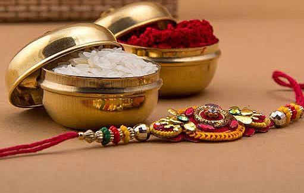

☰
Origin: Ancient Indian subcontinent (over 4,000 years ago)
Belief: Dharma (righteous living), Karma (actions), Reincarnation, and devotion to various deities
Sacred Texts: Vedas, Upanishads, Bhagavad Gita, Ramayana, Mahabharata
Places of Worship: Temples
Followers Called: Hindus
Hinduism is one of the world’s oldest religions, rich with philosophy, rituals, cultural traditions, and a deep spiritual heritage. It embraces the idea that divinity can be understood in many forms, including gods such as Brahma, Vishnu, Shiva, Lakshmi, Saraswati, Durga, and Krishna. Hinduism teaches that life is a journey of the soul through cycles of birth, death, and rebirth, guided by karma and the pursuit of dharma. Its scriptures offer guidance on moral conduct, meditation, devotion, and the path toward moksha—liberation from the cycle of life. Hindu traditions vary across regions, yet they share celebrations filled with color, prayer, music, and a belief in the triumph of truth and righteousness.
Holi, known as the “Festival of Colors,” is one of the most joyful celebrations in Hinduism. It marks the arrival of spring and celebrates the triumph of good over evil, symbolized by the story of Prahlad and Holika. The festival begins with Holika Dahan, where bonfires are lit to represent the burning away of negativity and the victory of devotion. The next day, people gather in streets and open spaces to throw vibrant colored powders, splash water, sing, dance, and enjoy festive sweets like gujiya. Holi brings together families, friends, and even strangers, creating an atmosphere of unity, forgiveness, and fresh beginnings. It reminds people to let go of past conflicts and embrace joy, love, and harmony.
Date: Not Fixed (occurs in March)


Navratri is a nine-night festival dedicated to the worship of Goddess Durga and her nine divine forms. It symbolizes the victory of good over evil and celebrates the goddess’s power, strength, and compassion. Throughout these nine days, devotees observe fasting, prayers, meditation, and traditional dances such as Garba and Dandiya, especially in Gujarat and Maharashtra. Each day honors a different manifestation of Durga, representing courage, wisdom, purity, and divine energy. The festival often culminates in Dussehra, which marks the victory of Lord Rama over the demon king Ravana. Navratri is a time of spiritual renewal, discipline, cultural celebration, and devotion to the feminine divine.
Date: Not Fixed (celebrated twice a year)


Diwali, the “Festival of Lights,” is one of Hinduism’s most significant and widely celebrated festivals. It symbolizes the victory of light over darkness, knowledge over ignorance, and good over evil. The celebration commemorates various stories, including Lord Rama’s return to Ayodhya after 14 years of exile and his triumph over Ravana. Families clean and decorate their homes with oil lamps, candles, and rangoli designs to welcome positivity and prosperity. Prayers are offered to Goddess Lakshmi, the deity of wealth and fortune. Fireworks, festive meals, new clothes, and the exchange of gifts add to the joyous atmosphere. Diwali inspires hope, renewal, generosity, and gratitude for life’s blessings.
Date: Not Fixed (falls in October or November)


Raksha Bandhan is a beautiful festival that celebrates the bond of love, trust, and protection between brothers and sisters. On this day, sisters tie a sacred thread called a “rakhi” on their brothers’ wrists, praying for their well-being and happiness. In return, brothers give gifts and promise to protect and support their sisters throughout life. The festival has evolved to include cousins, close friends, and even symbolic bonds of affection beyond biological relationships. Raksha Bandhan highlights the importance of family unity, emotional connection, and the values of care, loyalty, and respect. It is a reminder that strong relationships are among life’s greatest blessings.
Date: Not Fixed (celebrated in August)
 
